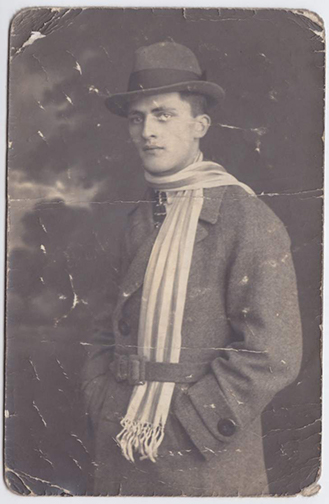
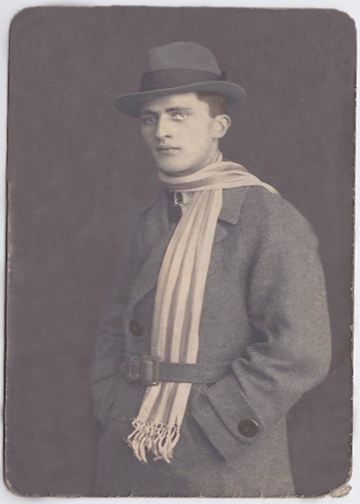
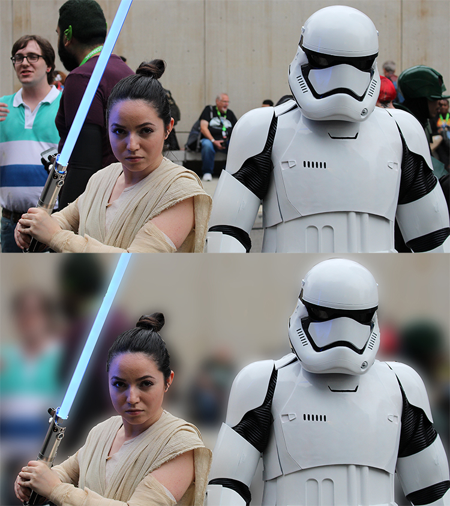

This weekend I went to New York Comic Con where I took photos of various cosplayers.
With the large crowd of people, it was nearly impossible to avoid accidental photo bombers.
I wanted to learn how to blur backgrounds to make sure the focus was on the subjects of the photos.
I came across this YouTube tutorial that taught me an easy way to solve this problem.
It was surprisingly easy, and I learned this teqnique in just a few minutes thanks to the tutorial.